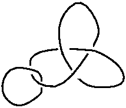
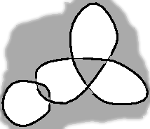
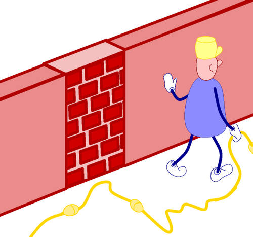

Suponha que você encontre um lindo nó como aquele (tudo bem, eu poderia ter feito melhor ... isso é apenas um exemplo para o amor de Deus!):

Você pode querer reproduzi-lo ou ajustá-lo às suas necessidades. A melhor maneira de conseguir isso é extraindo seu grafo subjacente. Para fazer isso, você deve colorir as regiões do seu nó com branco e preto, como um tabuleiro de damas. Você percebe que, esquecendo o padrão de acima / abaixo, seu nó cria regiões. Existe uma região especial, o exterior do nó, que é ilimitada. Colora-a em preto. Então, em cada cruzamento, coloque a região oposta também em preto:
Você termina com este padrão de tabuleiro de damas: 
Agora você cria seu grafo, definindo os vértices e as arestas que os conectam. Coloque um vértice em cada zona branca e acima de cada cruzamento, desenhe uma aresta entre as duas zonas brancas vizinhas, conectando os dois vértices que lhes são associados, com uma zona preta de cada lado:

Uma vez que você tenha seu grafo, você deve comparar cada cruzamento com os dois guias, a planície e o tracejado, para decidir o tipo de cruzamento que é:
 |
ou |
 |

Você precisa perceber quais são os efeitos das paredes no grafo porque o grafo que você extraiu pode muito bem ser horrível no início, mas com o auxílio de algumas paredes aqui e lá pode ser visto como encaixado em uma grade fácil. Como você pode ver no exemplo a seguir, fechar uma porta equivale a identificar os dois pontos finais enquanto cortando uma aresta é equivalente a simplesmente descartar essa aresta:


| Não hesite | para adicionar arestas novas "inúteis" | que você irá cortar ou fechar |
|
|
ou |
 |
Agora vamos construir um nó maior com a ajuda de encapsulamento.